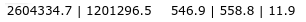
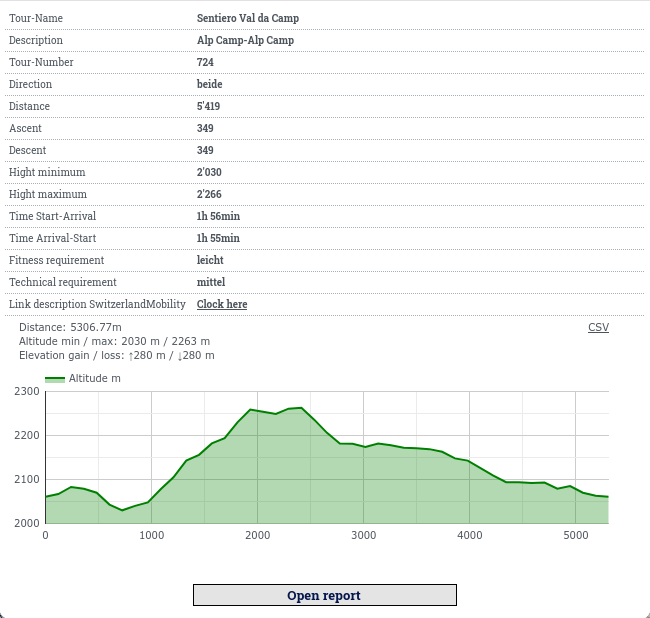
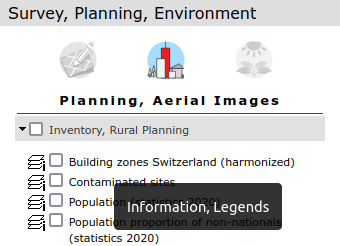
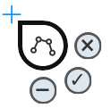

MAP+ Mobile Help
Content
Maps and Functions
Tools
Navigation
To navigate the map you have following options:
- Zoom in/out: Two fingers, pull together (-) or out (+), "double click" with the finger (+), +/- function buttons
- Rotate map: Rotate the map using two fingers. To rotate to north again, click on the function in the upper left corner (appears only when the map is rotated)
- Pan: Drag with one finger
- Localization with GPS
- Initial view (zoom "home")
Search
You can search among::
- Addresses
- Parcel
- Municipality names
- ZIP, localities
- Points of Interest such as hotels, restaurants etc.
- Topography namings such as local names, mountain peaks, lakes etc.
Examples of quick and efficient search techniques:
- Address, Optingenstrasse 27, Bern: Type "opt 27"
- Address, Bahnhofstrasse 13 , Stettlen: Type "bahn 13 stett"
- Hotel Sternen Muri: Type "ster mur"
- Mountain Hut Blüemlisalp: Type "blüemlisalphü"
You can as well search for Map Themes:
- Term, for example "Pub"
- Or Paragliding, type "paragl"
Coordinate and heights display

At the top of the map the coordinates and the heights of the center (crosshair) are shown. To query the coordinates of a specific point, just move the map.
Heights: shown is the height without vegetation and buildings etc. (swisstopo swissALTI3D), the height with vegetation, buildings etc. (swisstopo swissSURFACE3D) and the difference.
Background Maps and Functions
As background you can choose from (can be varying depending on application):
- Surveying gray
- Surveying color
- Aerial images: swisstopo swissimage
- National maps by swisstopo
- National maps vintage by swisstopo
- swisstopo TLM by TYDAC (TLM: Topographic Landscape Model)
- OSM++ Schweiz: Enhanced OpenStreetMap-data
(OSM). OpenStreetMap (OSM) is a collaborative project to create a free editable map of the world. Enhanced means, that we enriched OSM data with other free data, such as relief, contours, more detailed data etc.
Additional Functions
Weitere Funktionen sind:
- Themes: Choice of pre-cooked maps (Themes)
- Remove all layers
Layers
Click on the layer function on the upper left. A wide choice of layers relating to the following topics is available (can depend on the application):
- Surveying, Landscape
- Planning, Aerial Images
- Environment
- Traffic and Energy
- Facilities, services
- Culture, Tourism, Recreation
Querying objects
Most topics can be queried. Simply click on the desired object. Information can contain database entries, images, hyperlinks, live generated profiles and more.
Example:

Legends
Legends and descriptions are available for most map themes. Click on the map name:

Tools
Measure

Measurement on mobile devices (SmartPhones) offers the following functionality:


 Change the type of measurement within polyline and area. The type is then reflected in the measurement cursor. To start the measurement process, click on the cursor to the desired place. Move the cursor and add any points. To finish an operation click on the "OK" button.
Change the type of measurement within polyline and area. The type is then reflected in the measurement cursor. To start the measurement process, click on the cursor to the desired place. Move the cursor and add any points. To finish an operation click on the "OK" button.
 Click on the "minus" button to delete the last point.
Click on the "minus" button to delete the last point.
 Click on the "basket" button to delete the last measurement. Click on the "basket" button in the main menu to delete all measurements.
Click on the "basket" button to delete the last measurement. Click on the "basket" button in the main menu to delete all measurements.
 Click on the "x" button to exit the function.
Click on the "x" button to exit the function.
 Click on the "save" button in the main menu to store the measurement in the URL (which you could then copy and send to someone).
Click on the "save" button in the main menu to store the measurement in the URL (which you could then copy and send to someone).
Capture and editing on mobile devices

Capture new objects
Data capture on mobile devices ( such as smartphones) offers the following functionality:
The type of the object is automatically displayed in the capturing cursor. To start the editing process, click on the cursor at the desired location. Lines and areas: move the cursor and insert points as desired. To complete a process, click on the "✓" button. If snap layers are configured, you can snap on them.
Click on the "-" button to delete the last point.
Click the "✓" button to finish. Then the attribute mask will appear. Capture the attributes and save the object.
Click on the "x" button to exit the function (cancel).
Editing of existing objects
To do so, click on the object and on "Edit object" in the info window.
To edit an object, place the cursor at the desired location on the object. You have the following options:
- Point objects: use the cursor on the point, use the "move" function, then click on the "✓" function.
- Add intermediate point: place the cursor at any position on the object, drag with the "move" function, then click on the "✓" function
- Delete vertex: place the cursor on desired vertex, click on the "minus" function, then click on the "✓" function
- Finish: click on save in the info window